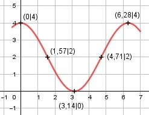

Aufgabe 175 f(x) = 2 * cos x + 2 x im Bogenmaß f'(x) = -2 * sin x f''(x) = -2 * cos x f'''(x) = 2 * sin x Definitionsbereich: 0 ≤ x ≤ 2π Wertebereich: 0 ≤ f(x) ≤ 4 (siehe Extrempunkte) Symmetrie zur y-Achse bzw. zum Punkt (0|0): f(-x) = 2 * cos (-x) + 2 = 2 * cos x + 2 = f(x) --> Achsensymmetrie -f(-x) = -(2 * cos x + 2) = -2*cos x - 2 ≠ f(x) --> keine Punktsymmetrie Nullstellen: f(x) = 0 2 * cos x + 2 = 0 |-2 2 * cos x = -2|:2 cos x = -1 x = π = 3,14 ≙ 180° N(3,14|0) Schnittpunkt mit der y-Achse: x = 0 f(x) = 2 * cos 0 + 2 = 4 Sy(0|4) Extrempunkte: f'(x) = 0 -2 * sin x = 0 |:(-2) sin x = 0 x1 = 0, f(0) = 4 f''(0) = -2 * cos 0 < 0 --> Hochpunkt (0|4) x2 = π = 3,14 ≙ 180° f(3,14) = 2 * cos 3,14 + 2 = 0 f''(3,14) = -2 * cos 3,14 > 0 --> Tiefpunkt (3,14|0) x2 = 2π = 6,28 ≙ 360° f(6,28) = 2 * cos 6,28 + 2 = 4 f''(6,28) = -2 * cos 6,28 < 0 --> Hochpunkt (6,28|4) Wendepunkte: f''(x) = 0 -2 * cos x = 0 |:(-2) cos x = 0 x1 = π/2 = 1,57 ≙ 90° f(1,57) = 2 * cos 1,57 + 2 = 2 f'''(1,57) = 2 * sin 1,57 ≠ 0 --> WP1(1,57|2) x2 = (3/2)π = 4,71 ≙ 270° f(4,71) = 2 * cos 4,71 + 2 = 2 f'''(4,71) = 2 * sin 4,71 ≠ 0 --> WP2(4,71|2) Graph:
